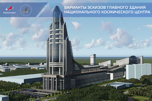
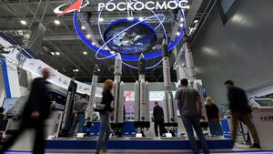

О компании
Год создания: 2015 год
Основатели: Российское правительство
Госкорпорация "Роскосмос" занимается разработкой и реализацией программ в области космической деятельности, управляет космическими исследованиями и запусками.
Краткая история компании:
Роскосмос был создан для консолидации всех космических активов и ресурсов России.Первой структурой, управляющей космической отраслью страны, было Министерство общего машиностроения СССР (Минобщемаш), образованное 2 апреля 1955 года Указом ВС СССР[8][9][10] на базе «Министерства авиационной промышленности», «Министерства вооружения» и «Министерства сельскохозяйственного машиностроения»[11][неавторитетный источник]. Первым министром назначен генерал-майор инженерно-артиллерийской службы Пётр Николаевич Горемыкин, занимавший до этого пост министра сельскохозяйственного машиностроения СССР[12]. 10 мая 1957 года объединено с Министерством оборонной промышленности СССР[13].
До момента образования Минобщемаша его функции выполняли в разное время другие министерства и РККА, в чьём ведении находились образующие организации, такие как Газодинамическая лаборатория, Реактивный институт (ныне Исследовательский центр имени М. В. Келдыша), Группа изучения реактивного движения и Центральный научно-исследовательский институт машиностроения.
 